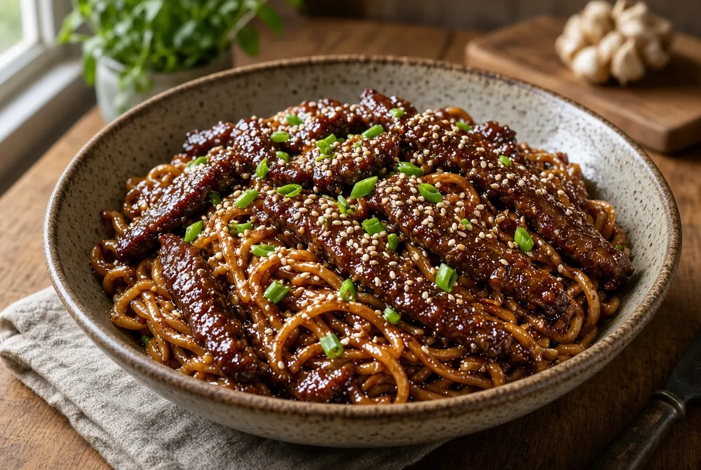

High-Protein Mongolian Beef Noodles
Thin-sliced lean beef and high-protein noodles in a ginger-garlic Mongolian sauce. Less sugar than the house skillet version. About 45 grams of protein per serving.

By
Yield: 4 servings
Prep:
Cook:
Total:
Ingredients
- 1 1/2 pounds lean beef sirloin or flank steak, sliced thin against the grain
- 1 teaspoon baking soda
- 1 tablespoon low-sodium soy sauce
- 1 tablespoon cornstarch
- 1 tablespoon avocado oil, divided
- 8 ounces high-protein spaghetti or protein egg noodles, dry
- 5 garlic cloves, minced
- 1 tablespoon fresh ginger, minced
- 4 green onions, whites and greens separated, sliced
- 1/3 cup low-sodium soy sauce
- 2 tablespoons hoisin sauce
- 2 tablespoons packed brown sugar
- 1/2 cup low-sodium beef broth
- 1 teaspoon toasted sesame oil
- 1/2 teaspoon black pepper
- 1/4 teaspoon red pepper flakes
- 1 tablespoon cornstarch mixed with 2 tablespoons cold water
- 1 teaspoon sesame seeds, for serving
Instructions
- Toss the sliced beef with baking soda, 1 tablespoon soy sauce, and 1 tablespoon cornstarch. Rest 10 minutes. The baking soda tenderizes lean steak so it stays soft after a hard sear. Skip the baking soda if you use ground beef.
- Bring a pot of water to a boil and cook the noodles to just al dente. Drain and reserve 1/2 cup pasta water.
- Heat a 12-inch cast-iron or heavy skillet over high heat. Add half the avocado oil. Sear the beef in two batches, 60 to 90 seconds a side, until browned but not cooked through. Pull it to a plate. Lean beef dries out if it sits in the pan.
- Drop the heat to medium. Add the remaining oil, garlic, ginger, and green-onion whites. Cook 30 to 45 seconds until fragrant. Do not brown the garlic.
- Pour in the 1/3 cup soy sauce, hoisin, brown sugar, beef broth, sesame oil, black pepper, and red pepper flakes. Scrape the fond off the bottom and bring to a simmer.
- Stir in the cornstarch slurry. Simmer 1 minute until the sauce looks glossy and coats a spoon.
- Return the beef and any juices. Add the noodles and toss until coated, 1 minute. Loosen with a splash of pasta water if the sauce grabs. Kill the heat. Fold in the green-onion greens and sesame seeds.
Notes
This is the high-protein plate. The original Mongolian Beef and Noodles stays on the site for the sweeter 80/20 skillet version.
Ground beef works. Use 1 1/2 pounds 93/7, skip the baking soda, and brown it in one batch until no pink remains, 160 F in the thickest crumble. Drain any grease before the aromatics.
Protein pasta is the lever. Barilla Protein+ or a similar egg-and-legume noodle runs about 10 grams of protein per 2-ounce dry serving. Plain rice noodles drop the plate by roughly 8 grams of protein per serving. Wide rice noodles still taste right if that is what is in the pantry.
Fold in 2 scrambled eggs at the end if you want another bump. That adds about 3 grams of protein and 35 calories per serving.
Estimated from USDA values for raw trimmed sirloin, a Barilla Protein+ style noodle, low-sodium soy sauce, hoisin, and brown sugar, before the optional eggs: about 530 calories, 45 g protein, 55 g carbohydrate, and 15 g fat per serving. Brands move those numbers. 93/7 ground beef lands in the same range.